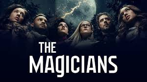
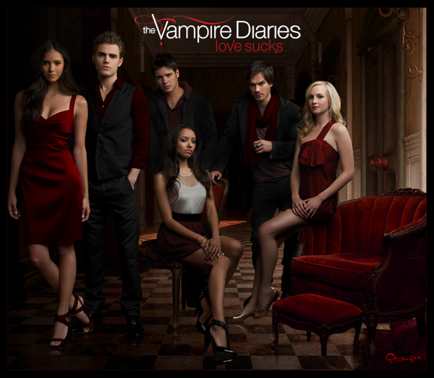
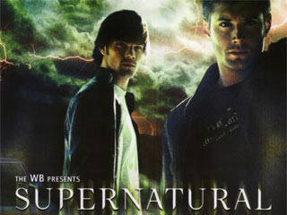

5: The Magicians
Ratings : 🌟 7.6
Genre :DramaFantasyMystery
Seasons : 5
Episodes : 65
Air-Date : December 16, 2015
Watch-Time : 60 min.(Per Ep.)
Synopsis:
Quentin Coldwater enrolls at Brakebills University for Magical Pedagogy to be trained as a magician, where he discovers that the magical world from his favorite childhood books is real and poses a danger to humanity. Meanwhile, the life of his childhood friend Julia is derailed when she is denied entry, and she searches for magic elsewhere.
4: The Vampire Diaries
Ratings : 🌟 7.7
Genre : DramaFantasyHorror
Seasons : 8
Episodes : 171
Air-Date : September 10, 2009
Watch-Time : 43 min.(Per Ep.)
Synopsis:
The series is set in the fictional town of Mystic Falls, Virginia, a town charged with supernatural history since its settlement of migrants from New England in the late 18th century. It follows the life of Elena Gilbert (Nina Dobrev), a teenage girl who has just lost both parents in a car accident, as she falls in love with a 162-year-old vampire named Stefan Salvatore (Paul Wesley). Their relationship becomes increasingly complicated as Stefan's mysterious older brother Damon Salvatore (Ian Somerhalder) returns, with a plan to bring back their past love Katherine Pierce (also played by Dobrev), a vampire who looks exactly like Elena. Although Damon initially harbors a grudge against his brother for forcing him to become a vampire, he later reconciles with Stefan and falls in love with Elena, creating a love triangle among the three. Both brothers attempt to protect Elena as they face various villains and threats to their town, including Katherine. The brothers' history and the town's mythology are revealed through flashbacks as the series goes on.
3: The Witcher

Ratings : 🌟 8.2
Genre : ActionAdventureFantasy
Seasons : 2
Episodes : 16
Air-Date : December 20, 2019
Watch-Time : 60 min.(Per Ep.)
Synopsis:
The Witcher is an American fantasy drama web television series created by Lauren Schmidt Hissrich for Netflix. It is based on the book series of the same name by Polish writer Andrzej Sapkowski. The Witcher follows the story of Geralt of Rivia, a solitary monster hunter, who struggles to find his place in a world where people often prove more wicked than monsters and beasts. But when destiny hurtles him toward a powerful sorceress, and a young princess with a special gift, the three must learn to navigate independently the increasingly volatile Continent.
2: The Boys

Ratings : 🌟 8.7
Genre : ActionCrimeFantasy
Seasons : 3
Episodes : 19
Air-Date : July 26, 2019
Watch-Time : 60 min.(Per Ep.)
Synopsis:
The first season sees lawyer-by-day Matt Murdock use his heightened senses from being blinded as a young boy to fight crime at night on the streets of New York City's Hell's Kitchen neighborhood as Daredevil, while uncovering a conspiracy of the criminal underworld being led by Wilson Fisk. In the second season, Murdock continues to balance life as a lawyer and Daredevil, while crossing paths with Frank Castle / Punisher, a vigilante with far deadlier methods, as well as the return of an ex-girlfriend—Elektra Natchios. In the third season, after Fisk is released from prison, Murdock, who has been missing for months following the events of The Defenders, reemerges as a broken man and must decide between hiding from the world as a criminal lawyer, or embracing his life as a hero vigilante.
1: Supernatural
Ratings : 🌟 8.4
Genre : DramaFantasyHorror
Seasons : 15
Episodes : 327
Air-Date : September 13, 2005
Watch-Time : 44 min.(Per Ep.)
Synopsis:
This television drama is about the two Winchester brothers, Sam and Dean, who were raised by their father, John, to hunt and kill all things that go "bump in the night" after his wife, Mary, was murdered by an evil supernatural being when the boys were young. 22 years later the brothers set out on a journey, fighting evil along the way, to find their recently missing father who, when they finally meet up with, reveals he knows what killed their mother, a demon and has found a way to track and kill it. Meanwhile, Sam starts to develop frightening abilities that include death visions, visions of people dying before it actually happens. These visions are somehow connected to the demon who murdered his mother and its mysterious plans that seem to be all about Sam. When their father dies striking a deal with the very same devil that had killed his wife, the brothers, now alone and without their mentor, are determined to finish the crusade their father started.